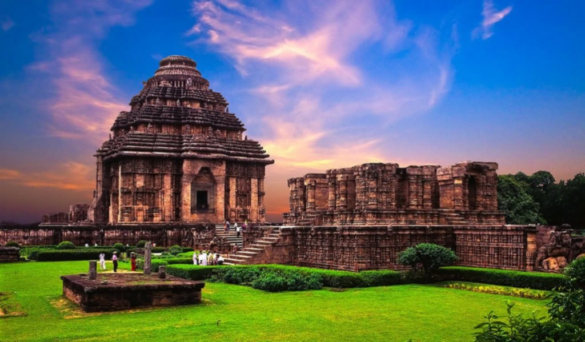
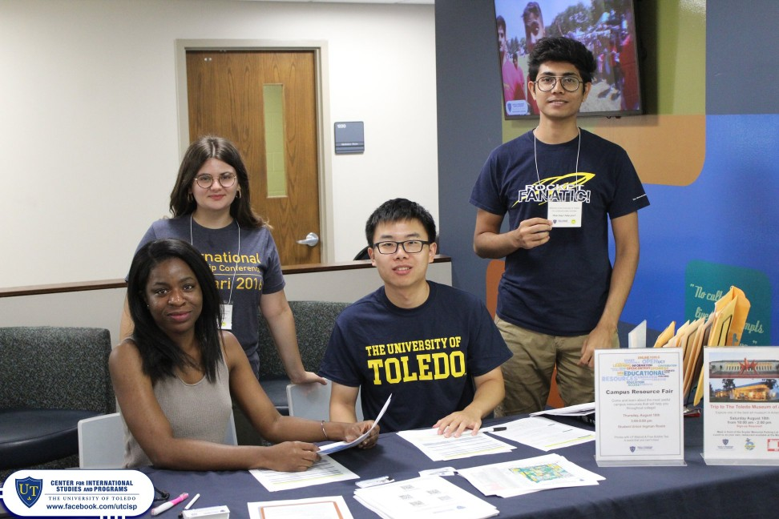
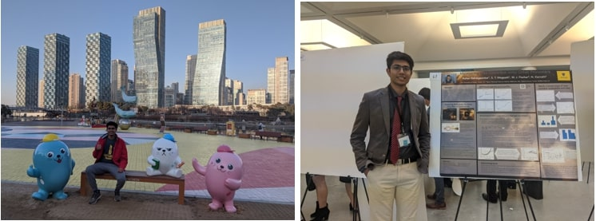

I am currently a graduate student at San Diego State University for MS in Astronomy. I graduated with a Bachelor of Science degree: double major in Physics and Mathematics, from the University of Toledo. My undergraduate research focused on proto-stellar evolution and near-infrared spectroscopic studies in the Orion Region. I have also worked at the NSF NOIRLab’s Gemini South Observatory as a research intern on reducing and analyzing DECam imaging data of a collaborative baryonic substructure survey in the Fornax Galaxy Cluster. When I am not engaged in academic activities (research, teaching, etc.), I’m committed to exploring, participating, and creating ways to develop an interest in STEM in the general public and those around me through outreach. In my free time, I love traveling, exploring new physical activities like skiing, kayaking, and learning about different religions, theology and its socio-cultural impacts.
If academic disciplines were used to describe one’s life experience, mine would be Archaeoastronomy: I was born and grew up in a Hindu setting to parents who loved to travel to ancient heritage sites in India. While walking past the humongous wheels of Konark Sun Temple back in India, my dad enlightened me to the concept of the universe. The knowledge about the existence of another sun, planet, or a solar system like ours out there turned out to be a paradigm shift of my 7-year old’s knowledge and beliefs. This not only intrigued me to my core but also laid the foundation for strong curiosity and interest in Astronomy. I have ever since been interested to learn new cosmological phenomenon and the ability to understand, predict, and explain them to someone in a humanly conceivable way.

Having a diverse educational background, from a strictly academic focused Indian education system to a personalized IB Diploma program, the importance of holistic learning; creative outlet, mental health, and conducive learning, shapes my identity and perspective of the present.
As an international student with no prior connections in US, I always took efforts to embrace and learn from discomfort. Limited resources during the early undergraduate years helped me come up with ways to help international students in US institutions. Talking with residence halls on my campus to start a summer storage program, working for the food-recovery network to provide excess dining-hall food to those in need, volunteering to be an orientation helper wherein I worked towards ensuring a smooth transition of international students from their home country to the US and college life. I empathized and reflected on my own experiences to provide them with personalized campus tours, information about essential campus resources, connecting them to other students from their home country, and working with different offices to expedite their orientation holds or issues. Supporting new outreach programs was also my priority; invited by the Department of Physics at UT to be a peer mentor and Open-house speaker to share my academic as well as personal experience. I provided them with campus resources including but not limited to research, courses, organizations, scholarships, and work ethic that might not be available to them due to their underrepresented background. Through these experiences, I developed the necessary skills of leadership and retrospection to assist students with diverse backgrounds, come up with solutions for issues I faced, and indulge in activities out of my comfort zone.

One of the reasons I am pursuing a scientific discipline as a career is the outlook of the scientific community towards rejection. Wherein disproving of hypothesis or rejection of proposals is not seen as a failure, rather an opportunity to learn and build upon current understanding of the research area. Being awarded conference travel fund after I proposed, despite the refrainment of the idea from my academic advisor and the department, about the importance of my undergraduate research to the vice president of my university; persisting through the cancellation of applied positions due to pandemic, and numerous unattested bureaucratic rejections due to my international status to secure a post-baccalaureate position at Gemini; enrolling in theatre and extra-curricular electives during succeeding semesters after toll on my mental health (due to personal loss) impacted my academic and social performance during fall 2018, are some of the ways which reflect my core values of resilience, risk-taking and positive outlook enabling me to create opportunities for myself in face of challenging circumstances. Extending these core values towards helping others, I applied lessons about the importance of holistic education (creative outlet, mental health, and conducive learning) in my academic assistant by creating study guides, online interactive group exercises, and extended office hours to ensure students were not stressed and had a smooth transition to online learning during the Covid-19 pandemic.

Prioritization of health and education over monetary pleasures have been defining principles of my upbringing as a lower-middle-class kid in India. The nexus between my parent’s constant struggle to reinforce these choices, although ostensibly seemed unfair to my younger self, and inequality became apparent as I grew up observing how lack of proper nutrition in schools and incompetent education system has prospered social inequalities and the inability of people to realize this paradoxical social construct. Ever since, I have been interested in learning about ways to leverage the collective passion towards astronomy in the general public to inculcate the teachings of inclusion, diversity, and holistic education in young adults.